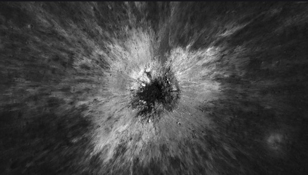
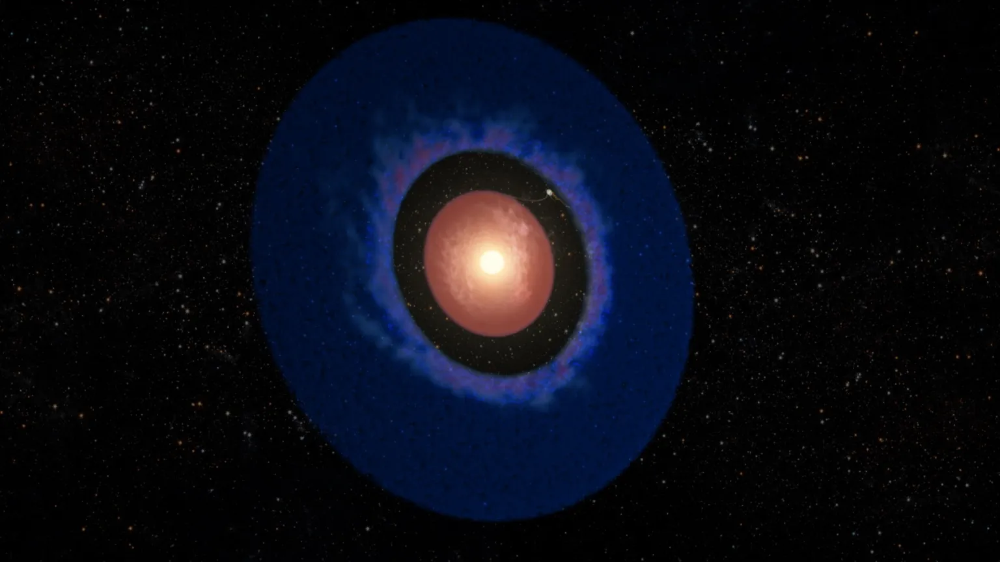
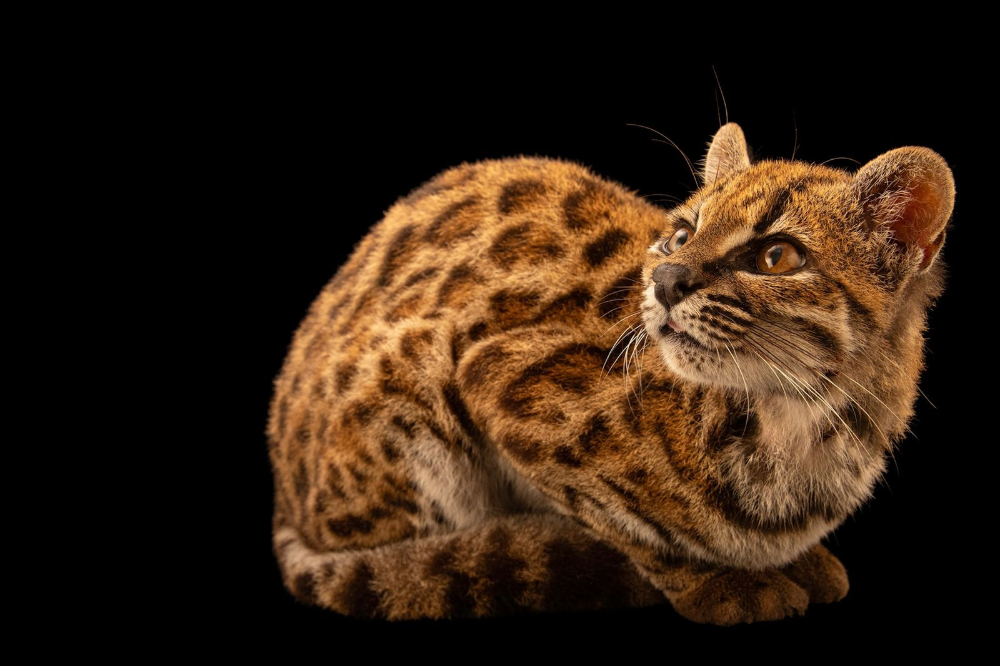
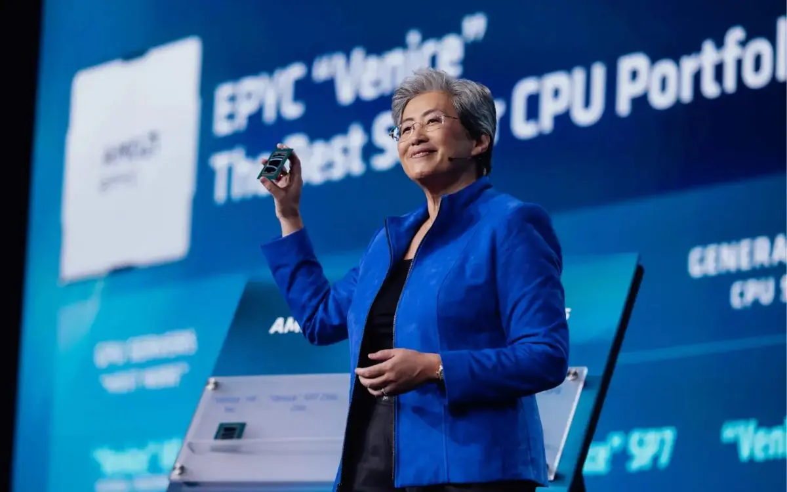
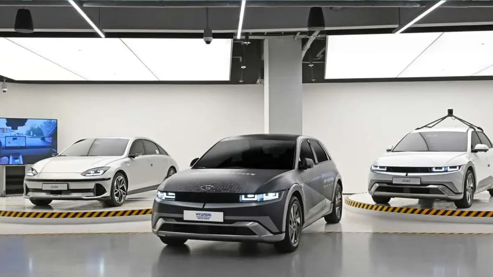
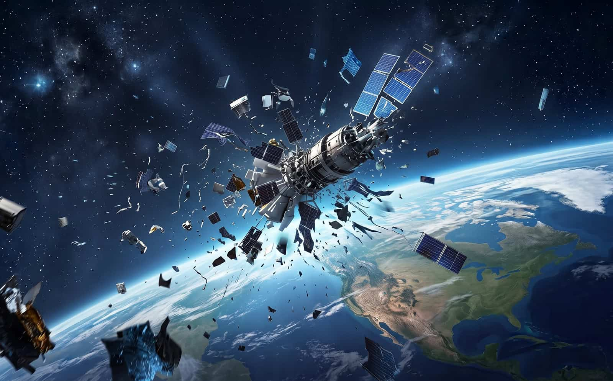

Novo telescópio brasileiro pode revolucionar o estudo do universo
O projeto, desenvolvido por pesquisadores nacionais, promete colocar o Brasil entre os protagonistas da astronomia mundial.

Jovens da periferia criam soluções digitais para problemas reais
Elas também programam: conheça histórias de mulheres na área de TI
Ciência



Tecnologia


